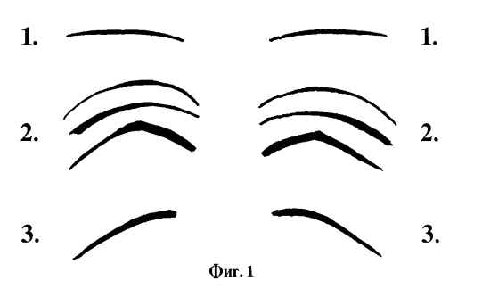
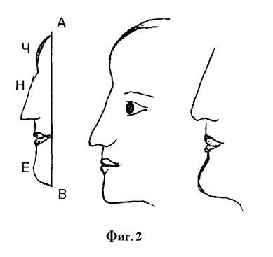
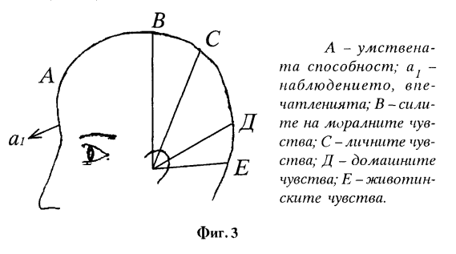
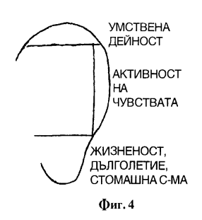
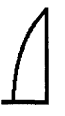

Беседа 787 от 3877 · Беинса Дуно
Мястото на Любовта
''Лекция от Учителя, държана на 22 октомври, 1924 г.''
Има три науки. Етиката е наука за душата. Педагогиката - за сърцето. Логиката - за ума.
Въпросът за съвестта влиза в познанието за сърцето. Интуицията е език на душата, чувствата - на сърцето, разумът - на ума. А волята се проявява чрез силата.
Атомът е бодът на реалността. А зад този атом, зад този бод седи великата реалност, която действува чрез него. Човекът е малко същество, но то е проявление на Бога. Зад човека седи Бог. То е въпрос само на времето. Тази най-малка частица може да се разраства. Най-мал- кото нещо е най-силно, най-деятелно, а най-голямото е най-постоянното. За да бъдеш постоянен, трябва да бъдеш много голям. Ако искаш да бъдеш силен, ще станеш малък. Който е мързелив, да употребява малките величини.
Искаш да бъдеш доволен. Тогава представи си, че всичко в света е твое. Тъй гледай на нещата. Човек има приятен характер, когато желае да постигне нещо, но той иска преждевременно да го постигне, това е лошото. Значи, когато в тебе се събуди чувство преждевременно да постигнеш нещо и нямаш търпение да дочакаш времето му, тогава ти си неспокоен.
Да кажем, че сега имаш едно състояние на индиферентност. Тогава се изисква да бъдеш много зает, да работиш. И после представи си, че това състояние е вън от тебе, външно състояние; не е твое, защото ако е твое, ти трябва да бъдеш господар на него, а ти не си му господар - тогава не е твое. Има състояния, които не са твои, натрупани са отвънка; а трябва да се освободиш от тях. В това тяло ти ще създадеш други тела, които ще бъдат твои, и тогава ще дадеш това тяло на света. Ние владеем физическия свят само отвънка, не сме го проникнали отвътре. Ако мога да разредя тази паница, та тя да изчезне и после пак да я сгъстя, тогава аз прониквам материята. Всички трябва да имате една философия - да изпъдите недоволството от сърцето си, съвършено да го изпъдите; и от ума си, и от волята си. Представете си Бог, Който е съвършен, Който е създал всичко. Той всякога се весели в делата си. Бог, който те изпълня с всички възможности! Защо не слушаш? Защо постоянно хленчиш, не искаш да работиш, а хленчиш, че нямаш нищо? И все искаш да ти дават това, което имаш. И защо ще искаш другите да ти дадат, когато няма друг да ти даде? И когато ти искаш нещо, което имаш, ще ти вземат и това, което имаш. Някой е красив и иска да стане по-красив. Той ще изгуби своята красота. Стремеж трябва да има да използувате заложените сили и възможности в ума, да им дадете условия да се развиват. Това е Божествено. Някой път искате по-голямо сърце. Не, ще развиете възможностите на своето сърце, на сърцето, което имате.
Меланхолията вижда нещата от моралните чувства. Там е прозорецът. Тя е замислена за физически работи. А веселостта гледа от над челото - там е прозорецът. Много малките работи правят впечатление на децата. Сангвиниците са весели - въздухообразните елементи всякога са весели, флегматичните са водни. Детският темперамент е на стомаха, а нервните хора са сухи. Сангвиниците, веселите хора са като птиците, които са вдигнали крилата си и се радват.
Човек трябва да мине една школа на обновление и изменение на организма, да може моментално да измени едно свое състояние. То става чрез реакция. Да допуснем, че вие сте изгубили 10 000 лева. Замислен сте. Трябва ви сега една реакция, за да възвърне спокойствието. Как? Казвам: Парите ви се намериха, носят ги. Това произвежда реакция и веднага всичката тази меланхолия изчезва от вас. Питам: Може ли да добиете същото състояние по друг начин? (Освен да се примирим със загубеното, да мислим, че някой беден ги е намерил.)
Трябва да си съставите едно особено понятие за света. Представете си, че лявата ви ръка е едно общество, дясната - друго общество, те не се познават. Турите ги едно до друго, запознават се. Е, тяхното щастие от това ли зависи? Някой път ще ги разделите, те ще плачат. Тогава трябва да им създадете работа отвън. Лявата ръка носи известни блага, радва се, мисли, че са за нея, обаче дясната ръка ги взема. Лявата ръка е неутешима. Тогава аз ще й кажа: Няма какво да плачеш, тези пари ще се намерят. Нали се обичате с дясната ръка, тя ще донесе пак парите. Дясната ръка, това са хората на Бога, хората, които обичат Бога, които вървят по Божия път. Лявата ръка са тези, които не вярват в Бога. Да кажем, дошъл един от лявата ръка, който не разбира Божия закон и ти задигнал парите. Но ти, понеже живееш в Бога, ще кажеш: „Моите пари са в лявата ръка.“ Всичките лоши хора, неверници са в лявата ръка, която също е в Господа. Е, Господ събира лявата и дясната ръка на едно място, тогава? Но не за дълго време. Държи ги, държи ги и после ги раздели пак - всеки си отива на своето място. Та този начин е хубав, има закономерност. Загубиш си парите, кажи: „В лявата ръка са, ще дойдат пак.“
Трябва често да правите упражнения от този род. Да кажем срещате някого, но той нещо се е нацупил. Първо трябва да влезете в неговото положение, да го разберете. После пък вие почвате да се цупите, че сте срещнали някого си там и сте го наскърбили. Сега това състояние се връща у вас. Как ще разрешите задачата си? Когато хората се обезсърчат и когато не вярват в Бога, това е една стратегия.
Радостта дава височина, а скръбта - дълбочина. Мисълта дава широчина. Първо идва радостта, а после мисълта. В скръбта най-напред идва скръбта, мъката, а после мисълта. Радостта мисли по един начин, а скръбта - по друг. Аз считам скръбта за товар, който отначало е неприятен, после, колкото повече се носи, става по-тежък и най-после този, който го носи, или трябва да си почине, или някой трябва да дойде да го снеме от гърба му. А радостта е човек, който пътува без товар. Затова по-скоро му се свършват приказките и припасите.
Има три вида вежди - 1, 2, 3 (фиг. 1).
1. Тези вежди са на човек с научни интереси.
2. Това са вежди на чувствителен човек, венерин тип.
3. Това са вежди на старите хора, клюмнали надолу, на песимистите.




Доброто е всякога красиво като закон. Но красивото не всякога е добро. Когато в красотата няма доброта - не е красота, тя е маска. В лицето трябва да има всякога известни черти, които да останат неизменни, а всички мускули наоколо могат да се изменят. Това говори за добър, установен характер. А ако всичко се мени в лицето и нищо постоянно не остава, такъв човек е без характер. Има хора, които се смеят така, че всичката им сериозност изчезва от лицето. А има хора, и като се смеят, сериозността остава. Сериозността е добро качество; това говори, че той създава, че има някои неща, които трябва да придобие и затова е сериозен. Скръбта, това е един висок връх, от който идват всички рекички. И една особена черта в лицето на човека е висок планински връх.
Когато тези особени черти се проявят, вие ги виждате, а когато не се проявят, вие не знаете къде са. Същите тези черти ги има в духовния свят. Човек, който се отличава с постоянство, притежава една ярка, пълна светлина. Човек, който е достигнал почти до съвършенство, е като една горяща свещ, дето горенето е пълно, без дим. А у другите хора горенето е непълно, има повече кадеж. По това се познават и различават хората.
Та човек строи своята съдба. Не всички греди, които човек има, са здрави. Има някои греди, които трябва да се извадят. На лицето ще четеш какво си свършил и какво ти остава да довършиш. Лицето не показва недостатъци, а показва недовършената работа, която трябва да се довърши. Недостатъците, това е недовършената работа. А недостатъци аз наричам само това, когато човек е злоупотребил с благата, които Бог му е дал. Недостатъци има, когато хубавите чувства са се изродили и са станали на грехове.

Какво е любов? Как бихте я определили? (Всичко, което изправя човека, всичко, което дава работа на човека за по-добър край, това е Любов.)- Любовта е кроеж, а не рязане. Някой става да копае лозето, но има си правила за това, той не бива да изкопае всичко, а само да прекопае пръстта. Знаете ли какъв е законът? - Любовта най- първо се дава на най-силните, а най-накрая - на най-слабите. Ако турите едно цвете там, дето водата извира, то ще се развали. Туй цветенце трябва да иде най-накрая, че едва да взима, едва да изсмуква от водата - това стига за него. Погрешката е там, че всички отиват отначало на извора. Чакай, туй място не е за тебе. Накрая иди. Ти трябва да определиш колко можещ да носиш и тогава да застанеш на съответното място до водата. Ако отидеш в началото, водата може да те отвлече и нищо да не остане в теб. Можеш ли да поканиш слънцето да ти дойде на гости? Слънцето изпраща посланици - лъчите, а то остава горе. Може ли някой да приеме слънцето на гости?
Трябва да се говори за малката игла. За Любовта човек не може да говори, защото тя е най-голямата топлина. Но всеки може да я намери! Няма същество, което да не разбира Любовта.
''Лекция от Учителя, държана на 22 октомври, 1924 г.''